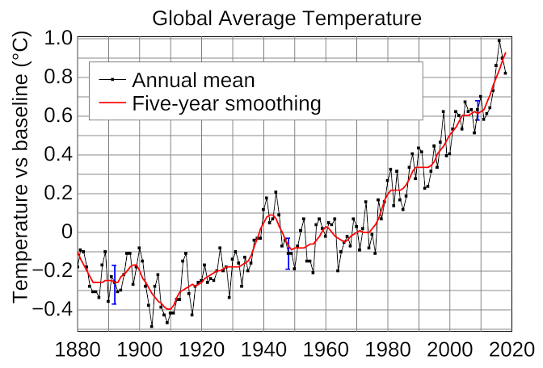

Bushfire FAQ
How did climate change affect the bushfires?
When people say that the "bushfires were caused by climate change", they do not literally mean the bushfires were lit because of climate change. Rather, they were "caused" by climate change because climate change created an environment in which it was easier for bushfires to start.
What is this environment, and how is it different to 10 or 50 years ago?
The new environment is one in which it is hotter and dryer for a longer period of the year. This has two effects, the first being that the heat and dryness increase the frequency and severity of bushfires; and the second being that this makes it too dangerous to perform burn offs.
Weren't there no burn offs because of Green's policies?
It is not against Green's policy to perform burnoffs. In fact it is explicitly their policy to perform burnoffs. See the Green's policy site. There is no, and never has been a basis to this claim.
Why were there less burn offs this year then?
As Greg Mullins, Former Fire and Rescue NSW Commissioner, said in an article for the Sydney Morning Herald, "Unprecedented dryness; reductions in long-term rainfall; low humidity; high temperatures; wind velocities; fire danger indices; fire spread and ferocity; instances of pyro-convective fires (fire storms - making their own weather); early starts and late finishes to bushfire seasons. An established long-term trend driven by a warming, drying climate."
Additionally the NSW RFS "fire-trained" staff was cut by 35% in 2018, reducing their capacity to administer burn offs safely (Source).
There were worse bushfires in 1983 and 1967!
There will always be outliers in any period of time, such as in 1983 and 1967. Climate change simply means the general trend of bushfire severity is upwards. This does not mean that Australia will experience bushfires as destructive as the worst of the 20th century every year, just that on average they will be worse.
This year is just an outlier!
This year very probably is just an outlier, however the number of "outlier" years will increase as climate change worsens.
Just look at the graphs, you're wrong!
Seems like a clear trend to me.
What can we do?
There is some debate on the best ways to stop the effects of climate change, however there are some widely accepted ways we can with little to no lifestyle changes. Firstly a complete switch to renewables and nuclear power, and secondly the introduction of a carbon trading scheme. Under a carbon trading scheme, each company would have a set amount of carbon emissions it can output annually, and if it wants more, it has to buy it from another company. This has been implemented with much success internationally, and would have little effect on the GDP, prices or taxes while reducing emissions.
All text content on this page is licenced under CC BY-SA 3.0 (AU)